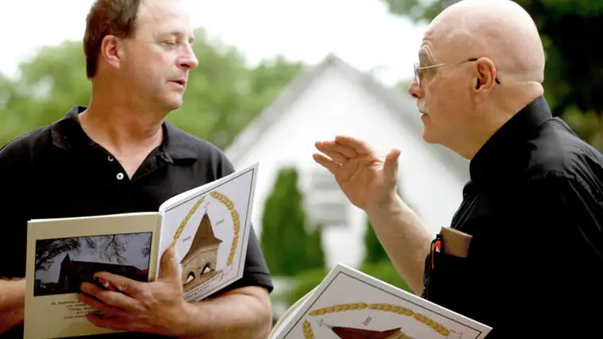

In his 12 years at St. Anthony of Padua Catholic Church, Rev. James Ermer got a good grasp of the parish’s personality.
“They’re a fairly blue-collar parish, very hard-working and dedicated, and their faith means a lot to them,” says Ermer, who was pastor there from 1997 to 2009.
He further categorizes the small, humble church, which sits in a residential area of south Fargo on the busy one-way 10th Street, as “proud but not pretentious.”
Bonnie Kroestch, a parishioner since 1975, calls St. Anthony’s an “average, run-of-the mill church” whose parishioners “don’t put on a lot of airs; what you see is what you get.”
“It’s always felt like home to us,” she says.
“Survivor” might be another good description of the church, which has seen many changes. Beginning as a “chapel of ease,” or mission, for the cathedral, St. Anthony’s was incorporated on Dec. 30, 1917, and, from 1928 to 1998, operated the St. Anthony of Padua School for grades 1 to 8.
But in 2011, during a diocesan-wide assessment, Bishop Samuel Aquila raised a question of its viability.
“I think Bishop Aquila was trying to come up with a plan that would best serve the people,” says parishioner Sue Knoll. “To his credit, he quickly saw how invested (the parishioners) were.”
Frank Paumen, a parishioner since 1960, has put not only his heart and soul into the church, but his hands as well, as carpenter and handyman for the past 19 years, including during the 2003 remodeling project that added a gathering area and new rectory.
In just about every nook and cranny, there’s a piece of him. “Just a walk through the church and I find a lot of memories,” he says.
He and his wife, Pat, bring the Eucharist to the homebound and help lead a parish prayer chain. “Not all the prayers are answered the way we want — that’s up to God,” Paumen says. “But it’s really rewarding.”
Parishioners also describe St. Anthony’s as deeply committed to serving others.
“As we’ve gone through this centennial year, it’s been fun to see the way things that happened 50, 80 years ago are still important at St. Anthony’s,” Knoll says. “To me, there’s always been an amazing work ethic, but also an incredible care for the poor and people in need.”
Stuart Longtin, a deacon for almost 15 years and parishioner for 35, oversees the parish food pantry; he says generosity is a trademark of St. Anthony’s. “If I run into a family that needs help, I’ll go to another family asking for help, and I’ve never been turned down,” he says.

Rev. Raymond Courtright, current pastor, says he once heard the parish described as “a refuge for sinners” and has found it true.
He’s especially excited about the recently-added Office of Evangelization, which he calls “a template for the future,” to foster more outreach. “You go to church, you love the Lord, but how do you share that with someone else?” he asks.
Courtright also commented on the parish’s diversity, with parishioners from Japan, Vietnam and Iraq, to name a few countries, and college students who come to worship, particularly at the well-attended 7:30 p.m. Mass on Sunday.
The renovation of the sanctuary, he says, will add further vitality to the church.
“We’re restoring some of the original beauty and luster that this church had 100 years ago,” he says. “For example, the baptismal font will be the original, instead of a clay pot you’d use to feed your animals.”
Artwork depicting its patron, St. Anthony, preaching to fish after being shunned by people will be among the newest creative treasures.
“The update will bring us back to the early days,” Paumen says. “As far as the décor inside, it’s going to be over-the-top nice.”
Along with the great generosity and commitment of fellow parishioners, he notes, “We’ve had exceptional leadership here; that’s a key.”
As for whether the church has another 100 years in her, Paumen says, “I certainly think so, but we’ll probably have to take someone else’s word for it.”
If You Go
What: 100th Celebration Closing Mass and Dinner
When: 5 p.m., Saturday, Nov. 18
Where: St. Anthony of Padua Church, 710 10th St. S., Fargo
Contact: RSVP for dinner requested by Nov. 13: (701) 237-6063, stanthony100//stanthonyfargo.weebly.com/.
[For the sake of having a repository for my newspaper columns and articles, I reprint them here, with permission, a week after their run date. The preceding ran in The Forum newspaper on Nov. 11, 2017.]